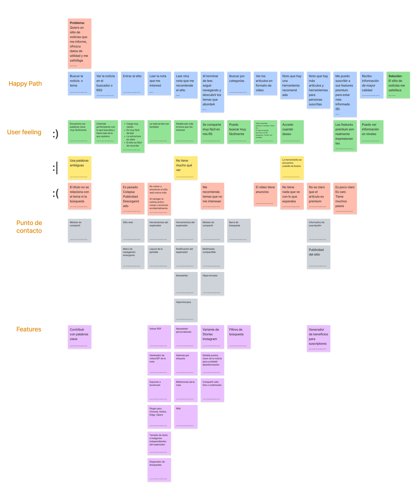

Adult Inn News Website
This is a project to develop from the UX/UI up to coding in html+css+js to make a real product for a test and obtain information in google analytics and mixpanel about de behavior of the customers inside the website.
Challenge
Create a news website that attracts people to subscribe to the news website starting from an interactive prototype that can be transformed into real responsive code and uploaded to GitHub to test with users.
My Role
UX Design, Research, Interaction Design, Design System, Prototyping, Coding.
Hyphotesis
We believe that by creating a news platform for young people between the ages of 24 and 38 who are facing the transition stage to adult life, we will be able to provide valuable content that improves people's lives.

User Persona
María Gómez - 24 yo
Wants to travel, start her own bussines, study, buy a house.
She's dealing with stress, insecurity, bills.
Iván Juarez - 33 yo
wants financial freedom by undertaking.
Family illnesses hurt him, his credits drown him.
Javier Alvarado - 28 yo
He longs for a key position in his company and to save money.
He has no idea how to manage his financial life.
Journey Map - To know the website

Learning
At the end of this project, I can say that I learn coding in Html+Css+VanillaJs, GitHub, Google Analytics, and Mixplanel to a better understanding of the complete life cycle of a product.
Insights after testing
- Navigation bar too narrow
- The cost of the subscription gives a low income
- Finance section was the most visited tab, 2 possibilities:
- It's a really interesting topic.
- Gets in the way of other operations due to its location
- Low visit rate in advertising lack of interactivity
- Featured news as the most visited
KPIs
- Actions of first intention
- Drop off from home plate
- Subscribers x users ratio (1 out of 4)
- Click to advertising per session
- Affinity of advertising to the concept of "super offers" of the user
- Return of users
- Average session time drop off
- Scroll
- Monthly user return
- Visit to featured